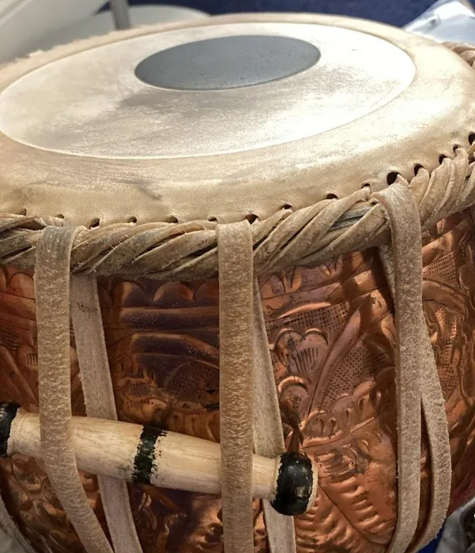

FAQs
Questions, answered.
Frequently asked questions about our services and products. Tap an underlined word for a quick definition.
General questions
What is SacMusicals?
SacMusicals is a home-based tabla making and service located in Sacramento, California. It was started to meet the local community's need for accessible, high-quality tabla craftsmanship, including reheading, repairs, and custom-scaled tablas.
What services do you offer?
We provide finished and , reheading for puddas and duggas, custom orders for custom-scaled tablas, and minor repairs to improve sound quality.
How can I place an order?
You can place an order by contacting us through our contact form. Please provide details about the product or service you are interested in, and we will get back to you with further information.
What is the turnaround time for orders?
Turnaround time varies depending on the condition of the tabla and current workload. We will provide an estimated timeline before starting.
Service questions
How do I know if my tabla needs reheading or repairs?
If your tabla has a dull sound, uneven tone, or visible damage to the skin or structure, it may need reheading or repairs. Feel free to contact us for an assessment.
Can you improve the sound of an older tabla?
Yes. Reheading, tuning, and minor repairs can significantly improve tone, resonance, and playability.
Do you offer custom tabla sizes or scales?
Yes, we offer custom orders for tablas with specific sizes or scales. Please contact us with your requirements.
Do you tune the tablas after reheading?
Yes. Every reheaded tabla is properly tuned and tested before it is returned.
Shipping questions
How do I send my tabla for reheading or repairs?
We offer both local drop-off and shipping options. Local drop-offs are available by appointment only, and location details are shared privately after service confirmation. We also accept shipped tablas for reheading and repairs, with shipping instructions provided upon request.
Do you ship finished products?
Yes, we ship finished products. Please contact us for shipping details and costs.
What are the shipping costs?
Shipping costs vary based on the destination and size of the package. We will provide shipping cost details when you place your order.
Credibility questions
Why should I choose SacMusicals?
We are a community-driven, home-based business built from genuine need, passion for tabla, and trust earned through quality work, social media, and reviews.
Do you have any reviews or testimonials?
Yes, you can find reviews and testimonials from our customers on our Instagram page at @sacmusicals.cali.
Will my tabla be kept secure while in your care?
Yes, we take security seriously. All instruments are stored safely and worked on in a controlled environment until service is complete.
Still wondering?
Ask us anything.
The process of replacing the drumhead, or skin, of a tabla. Over time, the skin can wear out, lose its tonal quality, or get damaged. Reheading involves removing the old skin and fitting a new one, which restores the tabla's sound and playability. Contact us to learn more!

The pudda, or dayan: the smaller, higher-pitched drum, usually wood.

The dugga, or bayan: the larger bass drum, often copper or brass.